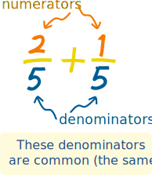
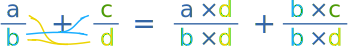
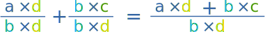

Common Denominator
This is the easiest method we know to add or subtract fractions!
What is a Denominator?
The denominator is the bottom number in a fraction.
It shows how many equal parts the item is divided into.

What is a Common Denominator?
When the denominators of two or more fractions are the same, they are Common Denominators.
Why is it Important?
Before we can add or subtract fractions, the fractions need to have a common denominator
In other words the denominators must be the same.
Making The Denominators the Same
To make the denominators the same we can:
Multiply top and bottom of each fraction by the denominator of the other.
Like in this example (press play button):
This always works, but we often need to simplify the fraction afterwards, as in this example (press play button):
We simplified the fraction 2032 to 1016 , then to 58 by dividing the top and bottom by 2 each time, and that is as simple as it can get!
What Did We Do?
1. We multiplied each fraction by the denominator of the other. Let's use letters instead of numbers:

2. And because they now have the same denominator, we can add them:

In One Step!
We can do those two things in one step like this:
Which we use like this:
Example: What is 23 + 45 ?
23 + 45 = 2×5 + 3×43×5 = 10 + 1215 = 2215
(Note: a was 2, b was 3, c was 4 and d was 5.)
That is how the experts do it!
Footnote: Least Common Denominator
You can also try the Least Common Denominator method.